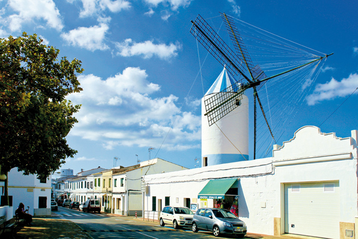
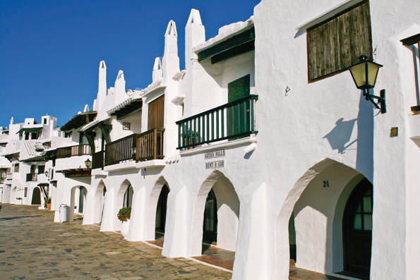

Sant Lluís, origines françaises
Minorque est depuis toujours un endroit attirant pour beaucoup de cultures et civilisations, elles ont laissé empreinte sur l’île. Minorque a été française pendant sept ans, entre 1756 et 1763, l’héritage le plus emblématique de cette occupation est le village de Sant Lluís.
Il a été fondé par les Français en honneur au roi Louis XV. Comme il était de coutume à l’époque, le village a été dessiné à partir d’un tracé rectiligne : des rues droites et simples, qui encore aujourd’hui forment le centre du village. La principale est la rue Cós, c’est la plus connue et elle réunit la plus grande variété de commerces.
Sant Lluís, compte un peu plus de 7.500 habitants, se situe à l’est de l’île. Marqué par le Molí de Dalt, un des trois moulins qui deux siècles en arrière cohabitaient dans le village. De Dalt est celui le mieux conserver et le plus emblématique. Sa coupole blanche et bleue donne une touche spéciale au centre-ville. À l’horizon de Sant Lluís, les hélices de cet édifice avec plus de 200 ans d’histoire méritent d’être mises en valeur. Si vous arrivez de Maó, le moulin vous souhaitera la bienvenue, élevant sa figure imposante dans le ciel bleu. Profitez-en pour visiter le musée ethnologique se trouvant aux pieds du moulin. Nous vous conseillons aussi de visiter l’église. Ce bâtiment au style néo-classique, est né sous l’occupation française, il fait partie d’un des symboles de la municipalité qui revendique ses origines gauloises, il s’adapte au temps qui passe en se montrant sous son meilleur jour au visiteur.
Sant Lluís est incontestablement une des villes les plus touristiques de Minorque. Son emplacement privilégié le permet. Baigné au sud et à l’est par la Méditerranée, cette terre est généreuse en criques et plages, des coins qui ont servi de point de départ pour les petites urbanisations se veulent confortables et belles pour les visiteurs. Son charme est si grand que nombreux sont ceux qui sont venus à Sant Lluís pour passer des vacances et ont fini par s’installer définitivement, sur cette terre poudrée de sable blanc et d’eaux cristallines.
Binibeca est une des raisons pour lesquelles Sant Lluís est aussi prisé. Son village de pêcheurs, transformé en centre touristique, exalte de la magie dans tous ces recoins. Ses ruelles, s’ouvrent comme elles le peuvent entre les petites maisons d’un blanc étincelant, immortalisées dans des milliers de photographies. Vous succomberez sûrement vous aussi à son charme. C’est normal. Si nous réunissons le village purement méditerranéen avec le son des vagues qui se filtrent entre les habitations, pas de doute à avoir Binibeca est spéciale.
Sant Lluís vous offre beaucoup de criques et de coins à visiter. Des centres avec une grande personnalité, des enclaves qui combinent le tourisme et le charme minorquin. Cala Alcaufar, par exemple, est un centre authentique, apparaît comme le coin des pêcheurs et utilisé comme zone de vacances par les minorquins. Biniancolla est une autre cale cent pour cent Minorque, orientée dans le secteur de la pêche, un lieu idéal pour ceux qui veulent découvrir les fonds marins de l’île. Binissafúller, Cap den Font, son Ganxo…. Le schéma est pratiquement le même, bien que chaque espace a sa propre identité. Découvrez-la, nous vous le conseillons.
Punta Prima est la plage la plus appropriée au touriste familial. Sa généreuse étendue de sable et ses eaux peu profondes, parfaites pour les parents et leurs enfants. Si vous vous allongez sur le sable et regardez l’horizon, vous apercevrez sur la mer la silhouette d’une petite île. C’est l’Illa de l’Aire, cette commissure sert d’habitat à la salamandre des Baléares, un sympathique petit lézard unique dans le monde, de couleur noire et qui a surpassé son isolement en mer en s'adaptant aux trente hectares de ce morceau minuscule de terre couronné par un phare.
 Si ce que vous recherchez est un paysage unique, qui vous laisse bouche baie, alors vous devez visiter Cala Rafalet. Cette petite crique s’ouvre entre deux falaises, et se montre au visiteur avec des eaux si cristallines que la tentation de se baigner est tellement grande qu’on ne peut y résister. Ça oui, si vous décidez de vous aventurez dans ce recoin, ne soyez pas pressé. Si loin du bruit de la ville, il ne vous reste plus qu’à vous laisser aller, vous fondre dans la nature et respirer, simplement respirer. Sant Lluís peut et doit se découvrir à pied. Partant du centre-ville, on peut parcourir des routes qui montrent les constructions traditionnelles du village, parsemées avant que les Français décident de les regrouper sous l’autorité de la même municipalité. On peut également visiter de nombreux échantillons du patrimoine ethnologique, comme le talaiot d’Es Pujol ou la tour de surveillance côtière connue comme Talaia de Torret.
Si ce que vous recherchez est un paysage unique, qui vous laisse bouche baie, alors vous devez visiter Cala Rafalet. Cette petite crique s’ouvre entre deux falaises, et se montre au visiteur avec des eaux si cristallines que la tentation de se baigner est tellement grande qu’on ne peut y résister. Ça oui, si vous décidez de vous aventurez dans ce recoin, ne soyez pas pressé. Si loin du bruit de la ville, il ne vous reste plus qu’à vous laisser aller, vous fondre dans la nature et respirer, simplement respirer. Sant Lluís peut et doit se découvrir à pied. Partant du centre-ville, on peut parcourir des routes qui montrent les constructions traditionnelles du village, parsemées avant que les Français décident de les regrouper sous l’autorité de la même municipalité. On peut également visiter de nombreux échantillons du patrimoine ethnologique, comme le talaiot d’Es Pujol ou la tour de surveillance côtière connue comme Talaia de Torret.
Informez-vous sur ces parcours ou sur les nombreux chemins qui passent par le village de Sant Lluís, cette localité a beaucoup plus à vous proposer de ce que vous l’imaginez. Ce village vous tend les bras. La principale activité économique de cette localité est précisément le tourisme, accueillir les visiteurs avec le plus grand soin et leurs offrir tous les services afin de rendre leur séjour le plus agréable possible.
Et si vous arrivez à Sant Lluís fin août, ne ratez pas les fêtes patronales. Le 25 août ou le week-end suivant, si le 25 tombe un jour en semaine. Le village est complètement attiré par les chevaux, la tradition et l’amusement. Suivant le schéma des fêtes patronales minorquines, Sant Lluís s’imprègne aussi de la magie des “caixers ” et de leurs chevaux, de leurs “bots” et la musique. Et dans le cas de cette municipalité, a lieu aussi un défilé de carrosses, très populaire, qui agglutine des centaines de personnes. Si vous en avez l’occasion, ne le ratez pas.
D’ailleurs, nous vous conseillons vivement de visiter la municipalité de Sant Lluís. Vous ne devriez pas laisser passer l’occasion d’explorer ses criques, de découvrir son centre-ville et son patrimoine ethnologique. Sant Lluís est un passage obligatoire lors de votre séjour à Minorque.